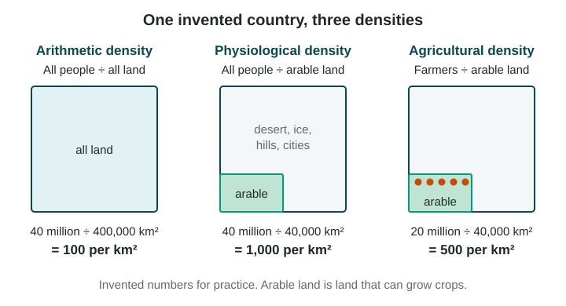

The last topic showed where people live. This topic asks how crowded those places are, and what crowding, or emptiness, does to a place.
Three ways to measure density
Population density is the number of people for each unit of land, usually per square kilometer (km²). There are three kinds, and each answers a different question.

| Measure | How to work it out | What it tells you |
|---|---|---|
| Arithmetic density | all people ÷ all land | How crowded the country is on average |
| Physiological density | all people ÷ arable land | How many people each km² of farmland must feed |
| Agricultural density | farmers ÷ arable land | How many farmers work each km² of farmland |
Arable land is land that can grow crops. It leaves out deserts, ice, steep mountains and cities.
Worked example. An invented country has 40 million people, 400,000 km² of land, 40,000 km² of arable land and 20 million farmers.
- Arithmetic density: 40,000,000 ÷ 400,000 = 100 people per km².
- Physiological density: 40,000,000 ÷ 40,000 = 1,000 people per km² of arable land.
- Agricultural density: 20,000,000 ÷ 40,000 = 500 farmers per km² of arable land.
The same country looks ten times more crowded when you count only the land that feeds it.
Reading the three measures
Egypt shows why physiological density matters. Its arithmetic density looks moderate, because the desert counts as land. But only about 3 percent of its land is arable (World Bank, 2021 data), almost all of it along the Nile. So its physiological density is very high: a small strip of farmland must feed a large population, and Egypt buys much of its wheat from other countries.
Agricultural density tells you about farming. A low agricultural density, as in the United States or Canada, usually means large farms that use machines and few workers. A high agricultural density, as in Bangladesh, usually means many small farms worked by many people. Compare the two densities: if physiological density is high and agricultural density is low, a country’s farmland feeds many people but few of them farm it.
Carrying capacity is not density
Carrying capacity is the number of people an area can support without damaging it. It depends on the land, the water and the technology people use, and on trade, which lets a place use food grown elsewhere. Students often mix it up with density. They are different:
- The Netherlands is one of the densest countries in Europe, yet its very productive farms grow a large surplus of food to export. Dense, but well within what its land and trade can support.
- A dry grazing area with few people can still be past its carrying capacity if too many animals strip the grass and the soil blows away.
So a high density does not prove a place is overpopulated, and a low one does not prove it is safe.
Effects of distribution and density
How many people live close together shapes daily life at the local scale.
- Services. Where density is low, as in northern Canada, each school or clinic serves few people, costs more per person and is far away. Where density is high, as in Dhaka, Bangladesh, schools and hospitals are close but crowded.
- Society. Dense cities offer many jobs and contacts but also high housing costs and traffic. Sparse rural areas may lose young people who leave for work.
- Environment. High density concentrates water use, waste and air pollution in one place. Low density spreads roads and homes over more land.
Governments use density data to decide where to build schools, hospitals and transport. Remember the scale: a country’s average density hides crowded cities and empty countryside inside it.